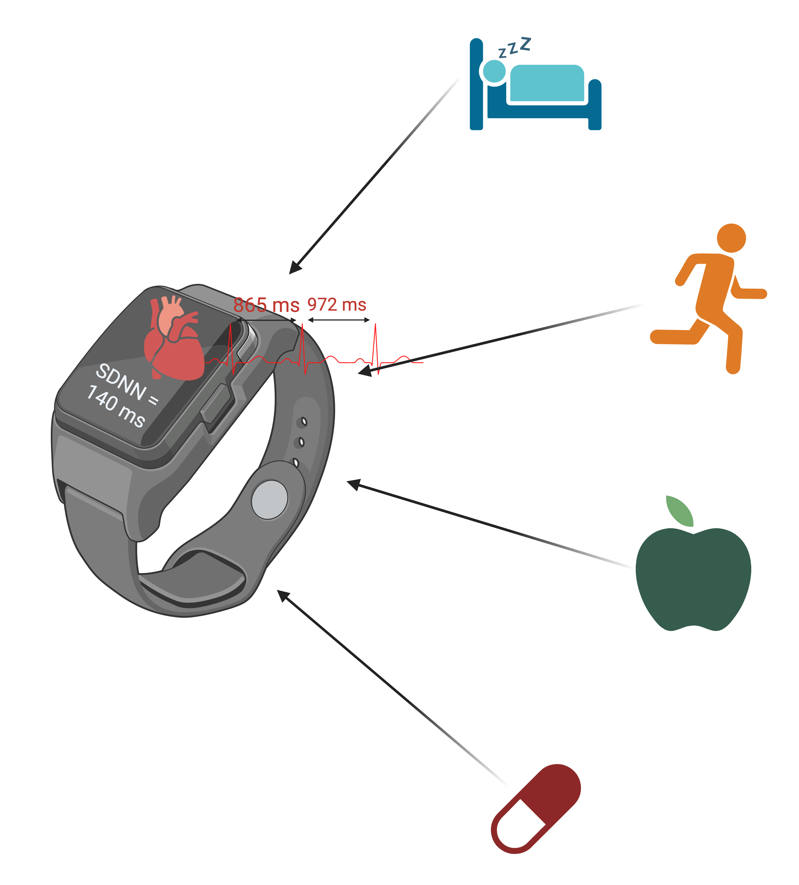
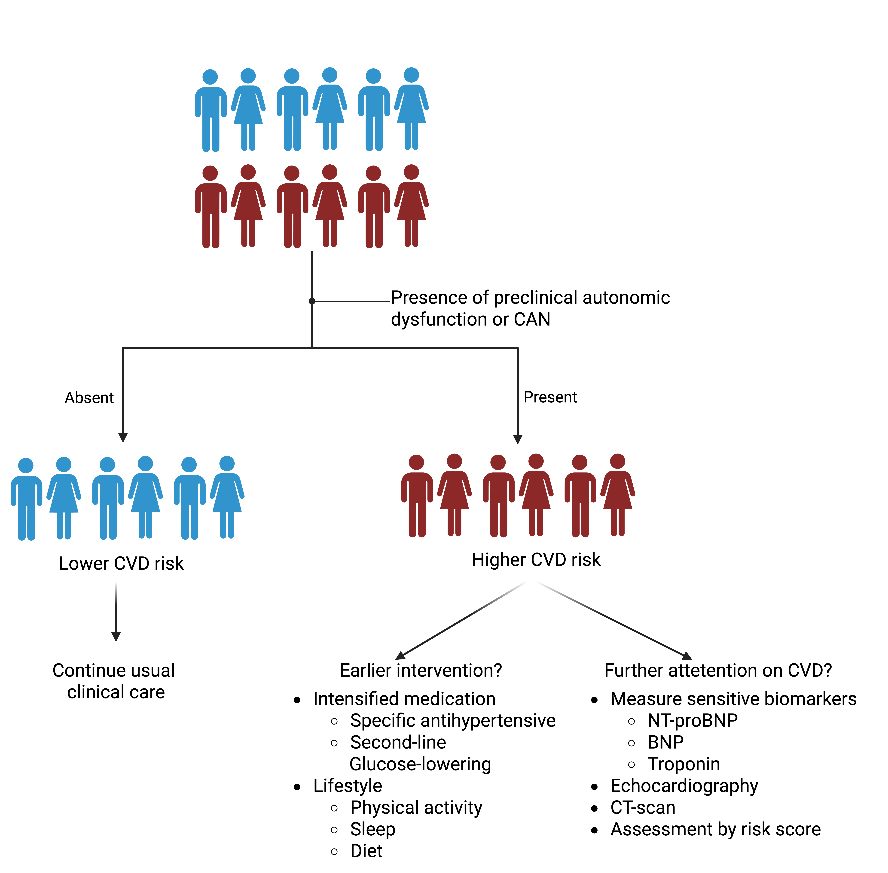

8 Perspective
This dissertation has investigated the impact of autonomic function on cardiovascular complications across different stages of glucose metabolism. Understanding when and how physiological signals reflect elevated CVD risk is essential for the development of early and effective prevention strategies. The incorporation of HRV into digital health solutions could be used to support personalized feedback mechanisms, enabling timely lifestyle or therapeutic interventions and contributing to more adaptive and preventive healthcare strategies. Based on the findings and conclusions, further perspectives are proposed to define its role in research and healthcare from three aspects: (1) continuous non-invasive health monitoring, (2) risk stratification, and (3) identification as a causal and modifiable marker.
8.1 Continuous monitoring of cardiovascular health
Wearable devices enable comprehensive data collection on behavioral (e.g., sleep and physical activity) and physiological (e.g., heart rate, ECG, temperature) parameters.1 These devices offer a broader and more feasible approach to long-term heart rate monitoring. Despite growing interest in wearable-based monitoring, the integration of HRV into routine cardiometabolic risk assessment remains limited. Two key aspects highlight the potential applications of monitoring: (1) identification of risk and (2) assessment of response to intervention.
Identification of risk
Lower long-term HRV has been identified as a risk factor for CVD, associated with arterial stiffness and clinical endpoints. Furthermore, findings indicate that specific HRV and heart rate patterns under free-living conditions may enhance early risk detection, independent of concurrent physical activity. For improved risk assessment, future predictive models should move beyond adjusting for physical activity as a confounder and instead integrate multiple physiological signals, such as HRV responses to sleep and activity patterns, to better capture dynamic health states. Machine learning offers powerful tools to analyze complex raw time-series data, including interbeat intervals and accelerometer signals, potentially improving risk prediction beyond traditional HRV summary metrics2. However, the limited interpretability of these models remains a key barrier to clinical adoption. Nevertheless, HRV may help identify individuals at elevated cardiovascular risk using wearable devices, potentially without relying on blood pressure or blood-based measures, though this remains to be validated.
Assessment of response to intervention
HRV represents a potential target for intervention, as low HRV may reflect adverse lifestyle patterns. Behaviors such as disrupted sleep, physical inactivity, diet, and irregular meal timing have been shown to influence circadian fluctuations in HRV.3–6 HRV has also been shown to respond to pharmacological interventions. For example, beta-blockers have been shown to increase HRV, while GLP-1RA may reduce it.7,8

(Source: Author)
Future research may leverage wearable devices to monitor the effectiveness of behavioral and pharmacological interventions on HRV at the individual level. This approach may support precision real-time monitoring to identify lifestyle patterns or treatments that promote cardiovascular health through HRV modulation or uncover potential side effects.9
However, standardization and transparency across wearable device brands remain a challenge for both research and clinical use. While smartwatches offer convenient heart rate monitoring, their accuracy varies due to reliance on photoplethysmography, which can be affected by motion and other external factors, especially during physical activity.10,11 Despite these limitations, ongoing improvements in sensor technology and algorithm calibration are likely to enhance the reliability of wearable-derived HRV and heart rate data.12 Open data formats are important to ensure that detailed data (e.g., interbeat intervals) from various devices can be used consistently in health prediction algorithms, rather than relying only on summarized outputs.12,13
8.2 Risk-stratification
The distinct roles of long-term HRV and CART in cardiovascular risk stratification remain to be fully established. Building on the concept of continuous monitoring through wearable technology, long-term HRV presents two promising avenues that warrant further investigation:
Enhancement of existing risk scores: HRV may improve the predictive accuracy of established cardiovascular risk models, such as SCORE2 or the Framingham Risk Score.
Support for treatment decisions: Long-term HRV may also help optimize the timing of treatment initiation and guide intermediate clinical decisions.
Cardiovascular risk assessment
Digital CVD risk calculators can be used to optimize the timing of follow-up assessments and treatment initiation. Analyses from Steno Diabetes Center Copenhagen have suggested that annual retinopathy screening may not be necessary for all patients. Instead, prediction models using clinical variables can be used to determine optimal re-screening intervals.14 In prediabetes, a key concern is overmedicalization, as many individuals do not progress to T2D or develop complications.15 Therefore, efforts to identify subgroups in prediabetes are needed to enable timely prevention of cardiovascular complications.16 In T2D, data-driven methods using clinical characteristics have been used to identify who will benefit most from intensive treatment.17 Whether wearable technologies, such as those measuring HRV, can improve individualized screening intervals and identify individuals who require closer clinical attention remains to be investigated.
Timing and treatment decisions
In addition to optimizing the timing of follow-up assessments, cardiovascular risk stratification can also guide when to initiate treatment. In type 1 diabetes, for example, elevated CVD risk scores are used to inform decisions about starting lipid-lowering therapy.18 Wearable-derived data may also support intermediate treatment decisions.9 In a UK population with T2D in clinical practice, patient characteristics have been used to predict whether SGLT2i or GLP1RA will better improve HbA1c levels.19,20 A further step would be to include long-term HRV as a clinical characteristic to enhance the prediction of treatment response. This could enable more precise stratification of therapy or lifestyle interventions based on the most effective option for each individual. Whether incorporating long-term HRV into predictive models can improve the personalization of treatment, particularly for therapies with cardiovascular effects, remains to be demonstrated. This conceptual framework may also have potential for guiding the selection of first-line antihypertensive medications.
As discussed in the clinical implications of CAN in T2D, it remains unclear how well a CAN diagnosis predicts heart failure risk in the broader T2D population seen in primary care. Intermediate clinical decisions are needed for patients diagnosed with CAN to determine whether to proceed with further evaluation for heart failure using echocardiography or to initiate specific cardioprotective therapy.
In summary, future research should uncover whether identifying individuals with high-risk of CVD based on autonomic dysfunction, using HRV or CAN assessed through CART, can support personalized and timely cardiovascular screening or interventions.9

(Source: Author)
8.3 Effective causal modifiable marker
The findings support a potential etiological link between long-term HRV and CVD risk, providing preliminary evidence consistent with a causal relationship. However, the observed association does not confirm causality, and further research is needed to determine whether HRV directly influences CVD outcomes. While randomized controlled trials are the gold standard for establishing causality21, isolating the direct effect of HRV is particularly challenging. Interventions that affect HRV often do so indirectly through changes cardiometabolic risk factors.22–24 Similarly, pharmacological treatments may improve HRV as a secondary effect, such as through blood pressure reduction from antihypertensive medications. This makes it difficult to determine whether modifying HRV itself leads to improved cardiovascular outcomes.
To address these limitations, modern epidemiological methods such as Mendelian randomization and structured causal mediation analysis offer promising alternatives.21 These approaches can be used to infer causality from observational data and estimate indirect effects using trial data.21 Notably, no GWAS has yet investigated the genetic determinants of long-term HRV. Establishing such associations is essential for understanding its genetic architecture and for using genetic variants as unconfounded proxies to assess HRV’s causal role in CVD. However, a challenge arises from findings in short-term HRV, which show considerable pleiotropy. This may complicate the use of Mendelian randomization, as the method relies on the assumption of no horizontal pleiotropy.25

(Source: Author)
Future cardiometabolic intervention trials and longitudinal cohorts, whether focused on lifestyle or pharmacological strategies, should, where feasible, include repeated HRV measurements.26 In trials, structured mediation analyses are enabled and used to determine whether modifying autonomic function is associated with sustained improvements in cardiovascular outcomes. Such evidence could clarify whether interventions like specific antihypertensive medications or lifestyle changes in physical activity, diet, and sleep can causally and sustainably improve CVD risk through HRV modulation. Using observational data with repeated measurements, similar interventions could be emulated by targeted trails.27 A further option is to use a CVD polygenic risk score as the exposure, CVD as the outcome, and HRV as a mediator to test whether genetic variation in CVD-related traits is mediated through HRV.28